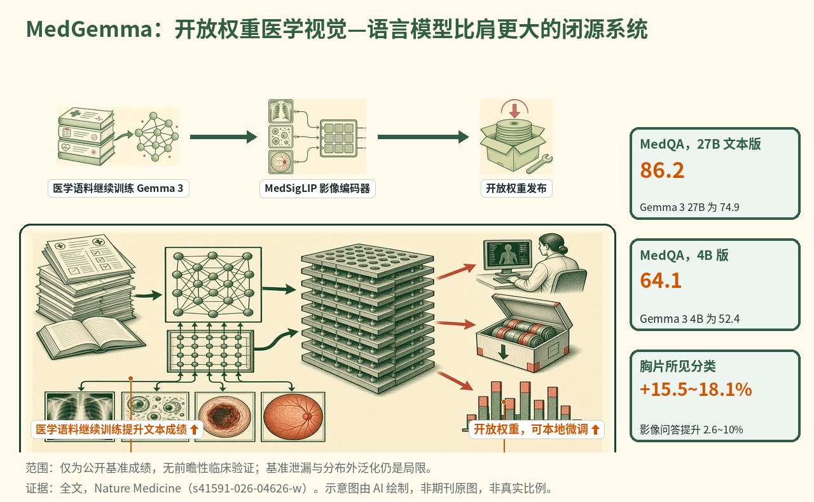

MedGemma：基于 Gemma 3 构建的开放权重医学视觉-语言模型家族
MedGemma 是一组基于 Gemma 3 构建的开放权重医学视觉-语言基础模型（4B 多模态、27B 多模态、27B 纯文本），并配有 MedSigLIP——一个约 4 亿参数、经医学调优的图像编码器；MedGemma 27B Text 在 MedQA 上得分 86.2，而 Gemma 3 27B 为 74.9，MedGemma 4B 为 64.1 对 52.4，分布外提升在医学图像 QA 上为 2.6-10%、在胸片 X 线征象分类上为 15.5-18.1%。

- 基于 Gemma 3 构建的开放权重医学视觉-语言家族（4B 与 27B 多模态、27B 文本）
- MedSigLIP——约 4 亿参数的医学图像编码器——驱动视觉理解，亦可独立使用
- 相较基础 Gemma 3，在医学文本与影像上大幅提升，规模-性能效率突出
- 开放发布支持本地、离线使用与数据高效的微调，但分数不等于临床验证
示意图概括了将 Gemma 3 医学调优为 MedGemma 家族（共享 MedSigLIP 编码器）、与基础 Gemma 3 及更大前沿模型的基准比较，以及用于本地评估与微调的开放发布。
背景与未决问题
现代医疗产生了前所未有的海量且多样的数据，诊断、治疗与监测都依赖于跨影像模态、专科与自由文本的证据整合。通用型大型多模态模型能力广泛，但往往缺乏稳健解读与推理医学数据所需的细致医学理解。与此同时，能力最强的前沿系统体量大、封闭且运行成本高，难以适配需要数据主权、离线运行、可复现的冻结检查点或严格算力预算的场景。
在 Nature Medicine 上，Google 的 Sellergren、Kazemzadeh 及同事推出 MedGemma——一组基于 Gemma 3 构建的、经医学调优的开放权重视觉-语言基础模型，并配有经医学调优的图像编码器 MedSigLIP。他们针对的未决问题是：一个单一、相对较小的开放基础模型能否在众多影像领域与文本任务上针对医学进行专化，同时保留通用能力，并能否作为下游微调的数据高效起点。
研究设计
MedGemma 包含三个变体：两个多模态模型 MedGemma 4B 与 MedGemma 27B，可接受文本、图像或两者；以及针对文本输入优化的 MedGemma 27B Text。它们均基于 Gemma 3 架构，兼容现有 Gemma 基础设施，支持任意的图文交错与 128k 上下文窗口。共享的 4 亿参数视觉编码器 MedSigLIP 由 Gemma 3 的 SigLIP-400M 编码器在数百万医学图像-文本对上微调而来；为保留通用视觉能力，保留了原始 SigLIP 数据，并将医学数据以约 2% 的权重混入。图像以 896x896 处理，而单独发布的 MedSigLIP 以 448x448 运行，使用在相同权重上下采样的位置嵌入。
训练分阶段进行。多模态解码器在预训练阶段重新适配增强后的编码器，医学图像-文本数据以约 12% 权重混入，并从 Gemma 3 检查点继续训练。后训练沿用 Gemma 3 的蒸馏与强化学习方案，在蒸馏中加入医学文本、在 RL 中加入配对的医学影像-文本；所有多模态后训练均通过 RL 完成，其泛化优于监督微调（SFT）。MedGemma 27B Text 仅使用后训练。评测涵盖分布内与分布外基准，分布外定义为完全从编码器训练、预训练与后训练中留出的数据集或划分。
关键结果
医学文本问答
在纯文本生物医学问答上，MedGemma 超过同规模的 Gemma 3 基线，并与体量大得多的模型相当。MedGemma 27B Text 在 MedQA 上得分 86.2，而 Gemma 3 27B 为 74.9；MedGemma 4B 得分 64.1，而 Gemma 3 4B 为 52.4。发布时，除 671 亿参数的 DeepSeek-R1（91.0）外，86.2 是开放模型在 MedQA 上的最佳成绩，并大幅领先次优、有充分记录的开放模型 OpenBioLLM 70B（78.2）。评测使用 MedQA、MedMCQA、PubMedQA、MMLU 医学子集、AfriMed-QA 以及分布外的 MedXpertQA。在 MedHallu 难题集上，第三方评测发现 MedGemma 4B 得分 0.50，而 Gemma 3 4B 为 0.09，表明其在区分"貌似合理却错误"的答案上更强。
医学图像分类与视觉问答
在涵盖胸片、组织病理、皮肤科与视网膜的零样本医学图像分类上，MedGemma 大幅超越 Gemma 3 基线，并在多个任务上胜过体量大得多的基于 API 的模型。相对基础模型的分布外提升为医学图像问答 2.6-10%、胸片 X 线征象分类 15.5-18.1%。在医学 VQA 基准 SLAKE 与 VQA-RAD 上，MedGemma 同样超过基础 Gemma 3，并与体量大得多的基于 API 的模型表现相当。在 Chest ImaGenome 的解剖结构定位上，交并比（IoU）为 MedGemma 27B 0.16、Gemma 3 27B 0.08、MedGemma 4B 0.03、Qwen3-VL 4B 0.09，表明仍有明显改进空间。
报告生成、推理与智能体行为
在 MIMIC-CXR 上的胸片报告生成（RadGraph F1）中，预训练的 MedGemma 4B 达到或超过更大及任务专用的对照模型，强化学习微调在 findings 加 impression 上达到 RadGraph F1 30.3，被称为该指标与数据集上的最新水平（state of the art）。人类专家评定正常研究生成报告的 68%、异常研究生成报告的 49% 等于或优于原报告，对应 81% 被评定为可能带来相同或更优的临床决策。在开放式内容问题上，事实性不准确的回答相对下降约 17%（Gemma 3 4B 为 18.5%，MedGemma 4B 为 15.4%）。在纯文本 AgentClinic 基准中，MedGemma 27B 在 AgentClinic-MedQA 上超过人类医生表现，并接近体量大得多的模型，相对基础模型的智能体提升为 10.8%；4B 模型难以遵循该智能体框架。
微调效率与通用能力
在三个此前未见数据集（SIIM-ACR 气胸、CRC100k 组织病理、ISIC 2017 皮损）上的微调实验显示，MedGemma 4B 总体优于 Gemma 3 4B，且在仅使用 10% 数据时优势最为明显，支持数据高效的适配。在 SIIM-ACR 上，Gemma 3 退化为预测多数类，而 MedGemma 未出现此问题。在通用、非医学基准（MMLU Pro、Global MMLU Lite、MMMU）上，MedGemma 相对同规模 Gemma 3 仅有轻微下降，表明专化并未牺牲广泛能力。作者指出 MedGemma 4B 与最昂贵对照模型之间存在约 500 倍的算力成本差距。
机制解读
论文所证实的： 通过经医学调优的共享视觉编码器（MedSigLIP）加上分阶段预训练与 RL 后训练，对开放基础模型（Gemma 3）进行医学领域适配，可在文本、图像分类、VQA、报告生成与智能体任务上相对同规模基础模型取得一致提升，同时基本保留通用性能。提升在视觉任务与数据有限的微调场景中最大，模型相对体量大得多的系统展现出突出的规模-性能比。MedSigLIP 单独使用即可支持数据高效与零样本的分类和检索，达到或优于专用编码器。
作者假设： 作者将 MedGemma 的优势归因于在预训练与后训练中对领域特定数据的优化融入，并认为开放发布能够实现数据与模型主权、离线使用及广泛的社区适配。他们建议，在需要冻结、本地或成本敏感模型时 MedGemma 最为适用，而前沿模型在追求最优广泛性能时可能仍更可取，二者还可在智能体场景中结合。他们提醒这些只是基线能力，意在作为起点，而非成熟的临床工具。
局限与不确定性
- 基准表现仅是迈向真实世界验证的第一步；部分基准可能已接近饱和，且公开基准带来测试数据泄漏的可能。
- 分布外泛化仍是局限，公开基准分数明确不等于临床验证。
- 在某些任务上专用模型仍可能胜过 MedGemma（例如最新水平的组织病理编码器）；多模态覆盖为二维，缺少 3D CT/MRI 序列以及基因组学等模态。
- 模型错误与训练数据中的细微分布偏差仍是风险；若干训练数据集为私有、无法共享，限制了完全可复现性。该研究来自 Google、由 Alphabet 资助，几乎所有作者均为 Google 现任或前任员工。
临床与产业意义
MedGemma 为开发者提供了一个开放、相对较小的基础模型，可本地或离线运行、可冻结以保证可复现性、并能针对特定医学任务高效微调，这在数据主权、成本或可靠性限制封闭前沿模型使用的场景中颇具吸引力。作者强调的可能用途包括医学图像检索，将放射学、组织病理、眼科与皮肤科与临床文本相连接，为试验匹配、药物警戒与质量指标提取概念，以及在智能体框架内辅助报告生成。其直接贡献是一个统一、开放发布的起点，而非经过验证的临床产品：真实部署仍需针对具体用例的微调，以及对安全性、性能与可靠性的充分验证。